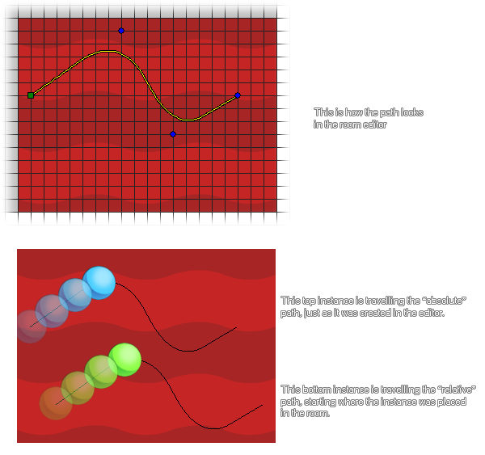

path_start(path, speed, endaction, absolute);
| Argument | Description |
|---|---|
| path | The path index to start. |
| speed | The speed of which to follow the path in pixels per step, negative meaning going backwards. |
| endaction | What to do when the end of the path is reached. The options are : 0 : end the path. 1 : continue the path from the start, jumping to the start position again if the path is not closed. 2 : continue from the current position. 3 : go backwards along the path again (achieved by reversing the path movement speed). |
| absolute | Whether the calling instance should follow the absolute path as it is in the editor (true) or a relative path to its current position (false). |
Returns: N/A.
A path is created from a series of defining points that are linked together and then used to plan the movements of an instance. They can be created with code, or in the Path Editor and they are assigned to an instance to use
in the game. You would then use this function to tell your instance which path to follow, what speed to follow the path (measured in pixels per step), how to behave when it reaches the end of the path, and whether to follow the
absolute or relative path position. this last part means that it either starts and follows the path exactly as you designed and placed it in the Path Editor (absolute), or it starts
and follows the path from the position at which the instance was created (relative).

As you can see in the above image, the two instances are following the same path started with path_start(), but one of the instances is following the absolute path while the other is following the relative path. It should be noted
that when relative is set to false (absolute) the instance will "jump" to the start of the path no matter where in the room it is placed.
path_start(path, 4, 3, 0);
This will make the calling instance follow the path indexed in the variable "path" at a speed of 4 pixels per step. It will follow the path relative to its own position, and when it reaches the end it will reverse direction and go back the way it came.